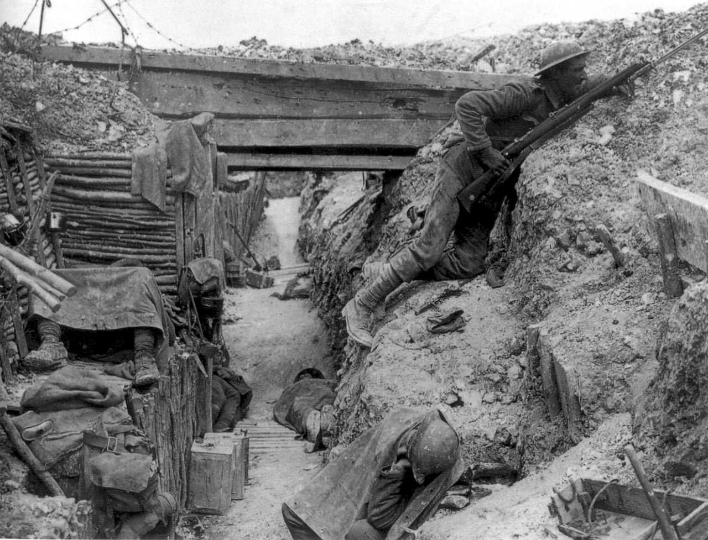
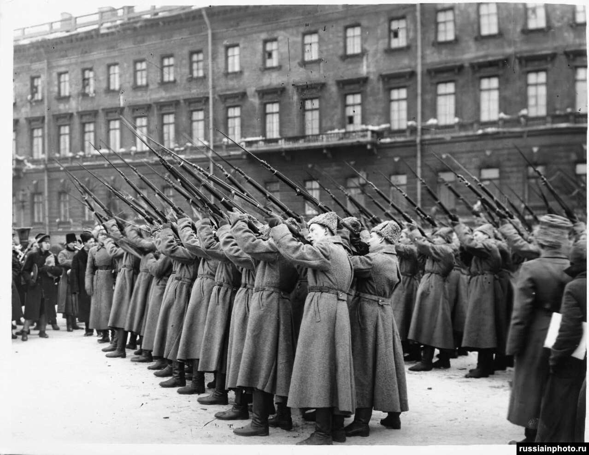
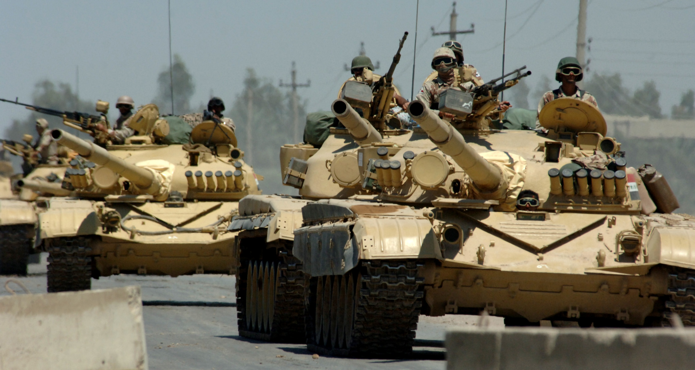

Most Important Wars of the 20th Century
- War I

- War I (also named as First World War, The Great War), often abbreviated as WWI or WW1, was a major global conflict that lasted from 1914 to 1918. It was fought between two coalitions, the Allies and the Central Powers. Fighting took place throughout Europe, the Middle East, Africa, the Pacific, and parts of Asia.
- War II

- World War II or the Second World War, often abbreviated as WWII or WW2, was a global conflict that lasted from 1939 to 1945. The vast majority of the world's countries, including all of the great powers, fought as part of two opposing military alliances: the Allies and the Axis. Many participants threw their economic, industrial, and scientific capabilities behind this total war, blurring the distinction between civilian and military resources. Aircraft played a major role, enabling the strategic bombing of population centres and the delivery of the only two nuclear weapons ever used in war.
- Cold War

- The Cold War was a period of geopolitical tension between the United States and the Soviet Union and their respective allies, the Western Bloc and the Eastern Bloc. The term cold war is used because there was no large-scale fighting directly between the two superpowers, but they each supported opposing sides in major regional conflicts known as proxy wars. The conflict was based on the ideological and geopolitical struggle for global influence by these two superpowers, following their roles as the Allies of World War II that led to victory against Nazi Germany and Imperial Japan in 1945.
- Russian Civil War

- The Russian Civil War was a multi-party civil war in the former Russian Empire sparked by the overthrowing of the social-democratic Russian Provisional Government in the October Revolution, as many factions vied to determine Russia's political future. It resulted in the formation of the Russian Socialist Federative Soviet Republic and later the Union of Soviet Socialist Republics in most of its territory. Its finale marked the end of the Russian Revolution, which was one of the key events of the 20th century.
- Gulf War

- The Gulf War was an armed conflict between Iraq and a 42-country coalition led by the United States. The coalition's efforts against Iraq were carried out in two key phases: Operation Desert Shield, which marked the military buildup from August 1990 to January 1991; and Operation Desert Storm, which began with the aerial bombing campaign against Iraq on 17 January 1991 and came to a close with the American-led Liberation of Kuwait on 28 February 1991.
Types of War
After effects of wars
- population loss
- Unemployment
- Debt
- Famine